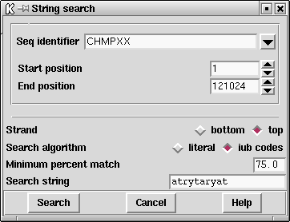

Two subsequence or string searches are available. One, selected from the "Search" menu on the Output Window, produces both graphical and textual output, and the other, selected from the "Search" button in the Sequence display, moves the cursor to the position of the next match. Here we document the use of the first search, and the other is described in section Search.
As shown in the dialogue the user selects the range and strand over which the search should be performed, the search algorithm, the minimum percentage match, and the subsequence/string for which to search. The search algorithm allows either NC-IUB codes Cornish-Bowden, A. (1985) Nucl. Acids Res. 13, 3021-3030 or a literal search. The literal search will search for exact matches eg inputting a search string of "n" will search for the letter "n". The NC-IUB codes option can use any of the NC-IUB symbols shown in the figure below and the search is not case sensitive.
NC-IUB SYMBOLS
A,C,G,T
R (A,G) 'puRine'
Y (T,C) 'pYrimidine'
W (A,T) 'Weak'
S (C,G) 'Strong'
M (A,C) 'aMino'
K (G,T) 'Keto'
H (A,T,C) 'not G'
B (G,C,T) 'not A'
V (G,A,C) 'not T'
D (G,A,T) 'not C'
N (G,A,C,T) 'aNy'

The matches are plotted as vertical lines at the match positions with the heights of the lines in proportion to their score. The matches are also written in the Output Window as shown below.
![[picture]](spin_string_search_p,6in.png.html)
(Click for full size image)
============================================================
Tue 19 Oct 11:52:50 1999: string search
------------------------------------------------------------
Position 7837 score 9 percent match 90.000000
Percentage mismatch 10.0
1
string atrytayrat
::..::..:
atpase.seq atgctatgag
7837
Last generated on 25 April 2016.